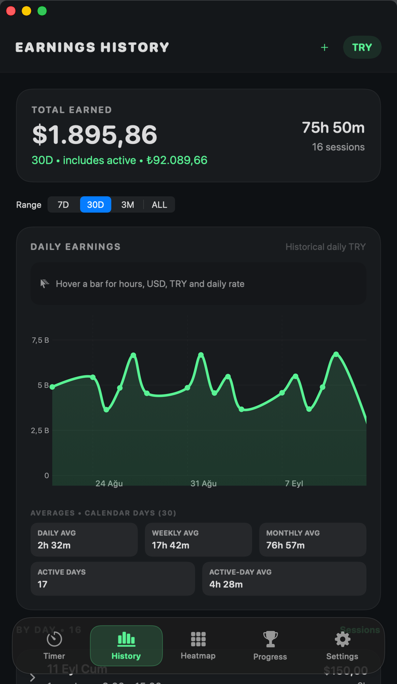

Zamanın
yerini bulsun.
Sen işine odaklan.
Clockin süreni ve kazancını takip etsin.
macOS 14 ve üzeri Apple Silicon & Intel
Selam, ben Clockin.
Bugün birlikte çalışalım mı?
Dokun, tanışalım.
09.00 / Yeni bir başlangıç
Bir tık.

Bir tık.
Ve odaktasın.
İlk adımı sen at. Süreni ve emeğinin karşılığını Clockin takip etsin.
Hazırım. Hadi başlayalım.
Başlamaya hazır
00:00:00çalışma süren
Bu seans₺0,00
Örnek sayaç · Saatlik ₺300
Bugünkü emeğin₺1.250,00
4 saat 10 dakika. Kendin için bir adım daha.
09.0013.40
Biraz daha ilerledin.Her seansla deneyim kazan.
+250 XPÖrnek bir iş günü
Kendi ritminde.
Keşfetmek için kaydır
Mac’inde böyle görünür.
Çalışma süren, kazancın ve ilerlemen.
Hepsi elinin altında.

Başlat, mola ver, kaldığın yerden devam et.
Uygulamadan gerçek görüntüler. Veriler örnektir.